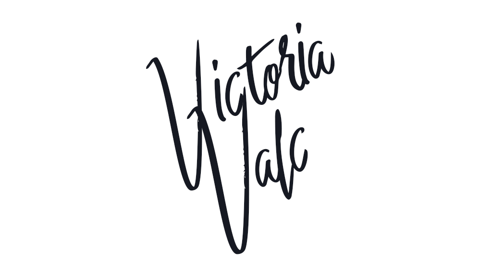

Export to PDF
The export to PDF feature lets you generate a PDF file directly from the editor. It sends the editor’s content and styles to the CKEditor Cloud Services HTML-to-PDF converter, so the PDF preserves the document’s formatting and layout.
The demo below lets you generate a PDF file based on the editor’s content. Edit the document, then click the export to PDF toolbar button  to save the content as a PDF.
to save the content as a PDF.
The Flavorful Tuscany Meetup
Welcome letter
Dear Guest,
We are delighted to welcome you to the annual Flavorful Tuscany Meetup. We hope you will enjoy the program as well as your stay at the Bilancino Hotel.
Please find attached the full schedule of the event.
The annual Flavorful Tuscany meetups are always a culinary discovery. You get the best of Tuscan flavors during an intense one-day stay at one of the top hotels in the region. All the sessions are led by top chefs passionate about their profession. I would recommend saving the date in your calendar for this one!
Angelina Calvino, food journalist
Please arrive at the Bilancino Hotel reception desk at least half an hour earlier to ensure that the registration process goes as smoothly as possible.
We look forward to welcoming you to the event.

Victoria Valc
Event Manager
Bilancino Hotel
The Flavorful Tuscany Meetup Schedule
| Saturday, July 14 | |
|---|---|
| 9:30 AM - 11:30 AM |
Americano vs. Brewed - “know your coffee” with:
|
| 1:00 PM - 3:00 PM |
Regional delicacies of Tuscany - live cooking Incorporate the freshest ingredients |
| 5:00 PM - 8:00 PM | Tuscan vineyards at a glance - wine-tasting with Frederico Riscoli |
The PDF export feature collects the HTML generated with the editor.getData() method and the default editor content styles combined with the styles provided by you in the configuration. It then sends them to the CKEditor Cloud Services HTML to PDF converter service. The service generates a PDF file and returns it to the user’s browser so they can save it in the PDF format on their disk.
The crucial aspect of this feature is its configuration. To ensure that the generated PDF looks as close as possible to the same content displayed in the WYSIWYG editor, the feature must be carefully configured.
The complementary pagination feature allows you to see where page breaks would be after you export the document to PDF. Thanks to the live preview, the user can fine-tune the structure of the output document when editing it. The pagination feature also shows you the page count and lets you navigate between the document pages.
Merge fields are visually distinct placeholder elements you can put into the content to mark places where real values should be inserted. It is perfect for creating document templates and other kinds of personalized content. This allows for automation and creating batch output of personalized PDF files. Learn how to configure it in the proper section of the merge fields guide.
On the Free Plan, file conversion is available in a limited capacity. Unlock significantly more conversions and full access with a CKEditor Paid Plan.
You can also sign up for the CKEditor Premium Features 14-day free trial to test the feature.
After you select a plan, follow the steps below, as explained in the Export to PDF quick start guide:
- Log into the CKEditor Ecosystem customer dashboard.
- Create the token endpoint needed for authorization.
- Install and configure the CKEditor 5 export to PDF plugin.
After installing the editor, add the feature to your plugin list and toolbar configuration:
import { ClassicEditor } from 'ckeditor5';
import { ExportPdf } from 'ckeditor5-premium-features';
ClassicEditor
.create( {
licenseKey: '<YOUR_LICENSE_KEY>',
plugins: [ ExportPdf, /* ... */ ],
toolbar: [ 'exportPdf', '|', /* ... */ ],
exportPdf: {
// Configuration.
}
} )
.then( /* ... */ )
.catch( /* ... */ );For more technical details, please check the plugin configuration API.
The configuration is the key to allow the HTML to PDF converter service to generate PDF documents that look as close as possible to the content created in the rich-text editor.
The configuration consists of 3 main parts:
- The converter options that tell the HTML to PDF converter service what is the format of the page (A4, Letter), the page orientation, etc.
- The style sheets sent to the service. They allow styling the content in the PDF document with the same styles that are applied to the content in the editor.
- The content styles used in the editor when rendered on the page.
These options need to stay in sync. For example:
- The style sheets sent to the service must define the same typography that is used in the editor.
- The editor’s content container should be styled in a way that reflects the page size and margins defined in the converter options.
- All web fonts defined on the page where the editor is used must be sent to the service as well.
Read on to learn how to achieve this.
This is the default configuration of the PDF export feature for CKEditor 5.
Export to PDF uses version 2 of the converter API by default. Version 1 is deprecated and kept for backward compatibility only. See the Export to PDF V1 (deprecated) section if you still need to use it.
{
exportPdf: {
fileName: 'document.pdf',
converterUrl: 'https://pdf-converter.cke-cs.com/v2/convert/html-pdf',
stylesheets: [
'./ckeditor5-content.css'
],
converterOptions: {
document: {
size: 'A4',
orientation: 'portrait',
margins: {
top: '0mm',
bottom: '0mm',
right: '0mm',
left: '0mm'
}
},
rendering: {
wait_for_network: true,
wait_time: 0
}
},
dataCallback: ( editor ) => editor.getData()
}
}If you are using the EU cloud region, remember to adjust the endpoint:
exportPdf: {
converterUrl: 'https://pdf-converter.cke-cs-eu.com/v2/convert/html-pdf'
}Use the stylesheets option to provide paths (relative or absolute URLs) to all style sheets that should be included during the HTML to PDF conversion.
The rule of thumb is if you want the export to preserve the styles, always add the style sheets with the content styles of the editor. Their path depends on your application setup, for example:
{
exportPdf: {
stylesheets: [
'./ckeditor5-content.css'
'./styles.css'
],
// ...
}
}In the snippet above, we assume both style sheets are available via the relative path on the client side. For example, some frameworks allow to place files in the public folder.
For some use cases the default configuration will suffice. As you can see in the example above, you can improve how your PDF file will look by adjusting the PDF export plugin configuration.
-
You can set the paths (relative or absolute URLs) to the style sheets that should be included during the HTML to PDF conversion.
The order of the paths matters. If you have custom elements or have overridden the default editor’s content styles, the paths to your file(s) should go after the editor content styles. See the examples in the
config.exportPdf.stylesheetsdocumentation. -
Sets the name for the generated PDF file (together with the extension). The default name is
document.pdf. You can see it called in the default configuration listing above.This option, however, also allows for using a callback to generate a dynamic file name. In the example below, the document’s title will be used as the file name of the generated PDF file.
Copy code// Dynamic file name. const exportPdfConfig = { fileName: () => { const articleTitle = document.querySelector( '#title' ); return `${ articleTitle.value }.pdf`; } } -
By default, the PDF export feature is configured to use the CKEditor Cloud Services HTML to PDF converter service to generate the PDF files. You can, however, use this option to provide the URL to an on-premises converter. Contact us if you need this feature.
If you are using the EU cloud region, adjust the endpoint accordingly:
Copy codeexportPdf: { converterUrl: 'https://pdf-converter.cke-cs-eu.com/v2/convert/html-pdf' } -
A token URL or a token request function. This field is optional and you should use it when you require a different
tokenUrlfor the export to PDF feature. You can skip this option if you use thecloudServicesconfiguration to provide the sametokenUrl. In most cases you will probably want to provide the token incloudServices, as other plugins like real-time collaboration will use this token as well. In this guide, to explicitly show that this value is needed, we leave it the insideexportPdfconfiguration. -
config.exportPdf.converterOptionsThe converter options control the PDF output: page size, margins, headers, footers, metadata, security, and more. See the HTML to PDF Converter features section for details on each capability, or refer to the API documentation for the full reference. Below is a sample configuration:
Copy codeconverterOptions: { document: { size: 'A4', orientation: 'portrait', margins: { top: '20mm', bottom: '20mm', right: '12mm', left: '12mm' } } } -
By default, the plugin uses
editor.getData()to gather the HTML sent to the conversion service. You can use this option to customize the editor’s data. For example, use this setting to enable highlighting tracked changes and comments in the exported PDF file.
Copy codedataCallback: editor => editor.getData( { showSuggestionHighlights: true, showCommentHighlights: true } ),
The config.exportPdf.dataCallback option may be useful when:
- Handling multi-root editor.
- Handling track changes suggestions preview.
- Adding a watermark to the document.
Version 1 of the HTML to PDF converter API is deprecated. While it remains supported for backward compatibility, we strongly recommend migrating to V2, which is the default. Refer to the migration guide from V1 to V2 for details. To force V1, explicitly set version: 1 in the exportPdf configuration.
The V1 API uses a flat configuration structure for converterOptions, unlike the nested structure in V2:
{
exportPdf: {
version: 1, // Required to use V1
converterOptions: {
format: 'A4',
margin_top: '0mm',
margin_bottom: '0mm',
margin_right: '0mm',
margin_left: '0mm',
page_orientation: 'portrait',
header_html: '<div class="styled">Header content</div>',
footer_html: '<div class="styled-counter"><span class="pageNumber"></span></div>',
header_and_footer_css: '#header, #footer { background: hsl(0, 0%, 95%); } .styled { font-weight: bold; } .styled-counter { font-size: 1em; }',
wait_for_network: true,
wait_time: 0
}
}
}For the complete list of V1 options, see the V1 API documentation and the V1 REST API documentation.
Configure the page size, orientation, and margins through the document object in converterOptions:
converterOptions: {
document: {
size: 'A4',
orientation: 'portrait',
margins: {
top: '20mm',
bottom: '20mm',
left: '15mm',
right: '15mm'
}
}
}The size property accepts predefined formats ('A4', 'Letter', 'Legal', 'A3', etc.) or a custom object with width and height. For a complete example including matching editor CSS, see Setting the page format.
document: {
size: { width: '210mm', height: '297mm' }
}To enable proper resolution of relative URLs for images and links, pass the base_url option:
converterOptions: {
base_url: 'https://example.com'
}For editor content like:
<p><a href="/">Homepage</a></p>
<p><img src="/logo.png" alt="Logo"></p>this option will resolve the URLs into their absolute forms:
/will becomehttps://example.com,/logo.pngwill becomehttps://example.com/logo.png.
Currently, the converter only supports absolute URLs and Base64-encoded images. See the REST API documentation for details.
If you are using web fonts via an @import or @font-face declaration, you can pass the path(s) to the .css file(s) containing them to the config.exportPdf.stylesheets. The order of the provided paths matters – you should list style sheets with web font declarations first. For more technical details, check the API documentation and REST API documentation.
Fine-tune how the converter renders the page before generating the PDF:
converterOptions: {
rendering: {
wait_for_network: true,
wait_time: 0,
wait_for_selector: '.content-loaded'
}
}wait_for_network– Whentrue, the converter waits for all network requests to finish before rendering.wait_time– Additional wait time in milliseconds (0–15000) after the page loads.wait_for_selector– A CSS selector; the converter waits until an element matching this selector appears in the DOM.
The converter lets you set the document’s header and footer similarly to Microsoft Word or Google Docs. Define a default header and footer applied to all pages:
converterOptions: {
document: {
margins: {
top: '15mm',
bottom: '15mm',
right: '15mm',
left: '15mm'
}
},
headers: {
default: {
html: '<div class="styled">Header content</div>',
css: '#header { background: hsl(0, 0%, 95%); } .styled { font-weight: bold; text-align: center; }'
}
},
footers: {
default: {
html: '<div class="styled-counter"><span class="pageNumber"></span></div>',
css: '#footer { background: hsl(0, 0%, 95%); } .styled-counter { font-size: 1em; color: hsl(0, 0%, 60%); }'
}
}
}To ensure that the header or footer is displayed, the margin must be big enough to accommodate it. In the code above, document.margins.top corresponds with the header and document.margins.bottom – with the footer.
You can set a background for the header or footer using the #header or #footer selector in the css option. These wrapper elements are provided by the converter.
You can define different headers and footers for the first page, odd pages, and even pages using the first, odd, and even keys. Each overrides the default for its respective pages:
headers: {
default: {
html: '<div class="header">Company Name</div>',
css: '.header { text-align: center; font-size: 10pt; }'
},
first: {
html: '<div class="header-first">Report Title</div>',
css: '.header-first { text-align: center; font-size: 14pt; font-weight: bold; }'
},
odd: {
html: '<div class="header-odd">Section <span class="pageNumber"></span></div>',
css: '.header-odd { text-align: right; }'
},
even: {
html: '<div class="header-even"><span class="pageNumber"></span> Section</div>',
css: '.header-even { text-align: left; }'
}
}The footers object follows the same structure. If a page type key is not defined, the default is used as a fallback.
As you can see in the examples above, you can use the pageNumber and totalPages placeholders. For more details, refer to the REST API documentation.
If you import headers and footers from a Word document and want to preserve and reapply them when exporting, see the Import from Word guide’s Preserving headers and footers. Note that when forwarding stored headers/footers into PDF export, you typically need to inject those header/footer converter options within the execute call of the exportPdf command. Hence, the converter receives them at export time.
Mirror margins (also known as “gutter” or “book” margins) are useful for documents intended for double-sided printing or binding. When enable_mirror_margins is set to true, the left and right margins swap between odd and even pages:
- Odd pages (right-hand):
leftbecomes the inner margin (near binding),rightbecomes the outer margin. - Even pages (left-hand): the margins are reversed –
rightbecomes the inner margin,leftbecomes the outer margin.
converterOptions: {
document: {
margins: {
top: '20mm',
bottom: '20mm',
left: '25mm',
right: '15mm',
enable_mirror_margins: true
}
}
}In this example, odd pages will have a 25 mm inner margin and 15 mm outer margin, while even pages will swap to 15 mm inner and 25 mm outer, creating a mirrored layout suitable for book binding.
For mirror margins to work correctly, you must specify at least one of the left or right margins. If both are unset, the enable_mirror_margins option will have no effect.
Set PDF properties such as title, author, subject, keywords, and custom fields. PDF readers display this information in their document properties panel.
converterOptions: {
metadata: {
title: 'Quarterly Report',
author: 'Jane Smith',
subject: 'Q1 2026 Financial Summary',
keywords: [ 'finance', 'quarterly', 'report' ],
custom_fields: {
'Department': 'Marketing',
'Document-ID': 'DOC-12345'
}
}
}Protect generated PDFs with an owner password. The owner password controls document permissions (printing, copying, modifying). The PDF is encrypted with AES-256 by default.
converterOptions: {
security: {
owner_password: 'securePassword123'
}
}The owner_password is required when using this feature and must be between 6 and 64 characters.
Sign documents with PKCS#12 certificates to verify authenticity. The signature is embedded invisibly in the PDF metadata – it does not add visual elements to the document pages. PDF readers will show signature details in their signature panel.
converterOptions: {
signature: {
certificate: 'base64EncodedPKCS12Certificate',
certificate_password: 'certificatePassword',
reason: 'Document approval',
location: 'New York, USA'
}
}Both certificate (base64-encoded .p12/.pfx file) and certificate_password are required. The reason and location fields are optional metadata.
PEM certificates are not supported. Convert to PKCS#12 (.p12/.pfx) format before use.
By default, the converter compresses PDF output for smaller file sizes. You can disable compression to preserve the original PDF structure:
converterOptions: {
disable_compression: true
}- By default, the generated PDF file is encoded with
UTF-8. - By default, the converter sets
color-adjust: exact;. This means that your PDF document will preserve colors, images, and styles as you can see them in the editor. - The generated document can be watermarked. See the example and demo in the section below.
Check out some configuration examples that will show you how to customize the export to PDF feature. In the first example, you will learn how to add custom styling. The second example will show you how to set the page format. In the third one, you can see how to use web fonts in your configuration.
The default configuration of the ExportPdf plugin attaches the default editor content styles to the HTML content sent to the converter.
However, if you need to, you can also set paths to additional CSS files. Let us assume that you already have a my-custom-editor-styles.css with your custom styling for the editor content that you use on your website, but you also want to include these styles in the generated PDF file.
Here is the example code:
ClassicEditor
.create( {
// ... Other configuration options ...
exportPdf: {
stylesheets: [
'path/to/editor-styles.css',
'path/to/my-styles.css'
],
fileName: 'my-document.pdf'
}
} )
.then( /* ... */ )
.catch( /* ... */ );This is how the corresponding editor styles may look like:
/* my-custom-editor-styles.css */
/* Custom link color. */
.ck.ck-content a {
color: purple;
}
/* Custom header styling. */
.ck.ck-content h1 {
border-bottom: 2px solid;
}
/* Another custom styling... */
/* ... */With these settings, the content in the generated PDF file should have the same styling as it has in the WYSIWYG editor.
You are not obligated to use .ck.ck-content selectors to style your content. If your implementation contains custom CSS classes, you can use them instead.
Consistency is an important factor. To make sure that the editor content and the generated PDF file look the same, you need to match their format settings. You can change your existing style sheet or use a new one, for example, format.css. By default, the CKEditor Cloud Services HTML to PDF converter is set to A4 format, but you may change this setting in your configuration.
Assuming that you want to create a document in the US Letter format, with the standard margins (19mm for each side), here is the example code you can use:
ClassicEditor
.create( {
// ... Other configuration options ...
exportPdf: {
stylesheets: [
'path/to/editor-styles.css',
'path/to/my-styles.css'
],
fileName: 'my-document.pdf',
converterOptions: {
document: {
// Document format settings with proper margins.
size: 'Letter',
orientation: 'portrait',
margins: {
top: '19mm',
bottom: '19mm',
right: '19mm',
left: '19mm'
}
}
}
}
} )
.then( /* ... */ )
.catch( /* ... */ );This example focuses only on preparing the editable to match the converter settings. As a result, the appearance of your editor may change. Depending on your editor type and implementation or even some inherited global styles like box-sizing, applying new padding values may change the size of the editor on your website.
For this example, box-sizing: border-box was implemented to make sure that the editor’s width would not change.
Now set the corresponding editor styles:
/* format.css */
/* Styles for the editable. */
.ck.ck-content.ck-editor__editable {
/* US Letter size. */
width: 215.9mm;
/* Padding is your document's margin. */
padding: 19mm;
/* You do not want to change the size of the editor by applying the new padding values. */
box-sizing: border-box;
/* ... */
}With these settings, the content in the generated PDF file should have the same US Letter format layout as it has in the editor.
This time you want to add a web font to your plugin. Let us assume that the editor is used on a page with certain typography, so the content in the editor inherits the font styles from the page. As such, these styles need to be passed to the HTML to PDF converter service.
The example below uses a web font from the Google Fonts service. For your convenience, the @import declaration and any font styles needed for your website are kept in a separate file, for example, fonts.css.
/* fonts.css */
@import url('https://fonts.googleapis.com/css2?family=Source+Sans+Pro:wght@400;700&display=swap');
html, body {
font-family: "Source Sans Pro", sans-serif;
/* ... */
}
/* ... */This allows you to use the web font settings in the plugin, without any additional tweaks. Just pass the path to the file in the config.exportPdf.stylesheets configuration option.
The order matters here. Font declarations should be at the beginning of the style sheets’ array. Otherwise, there is no guarantee that the font styling will be applied to the PDF file. Refer to the config.exportPdf.stylesheets API documentation for more details.
ClassicEditor
.create( {
// ... Other configuration options ...
exportPdf: {
stylesheets: [
'path/to/fonts.css',
'path/to/editor-styles.css',
'path/to/my-styles.css'
],
// More configuration of the export to PDF feature.
// ...
}
} )
.then( /* ... */ )
.catch( /* ... */ );Thanks to this, the editor inherits the font settings and you can be sure that they will be applied in the generated PDF file as well.
Take a look at another example of a fonts.css file. Suppose that your website uses the Source Sans Pro font as before but this time you want the Inter font to be used in the WYSIWYG editor. The file should look like this:
/* fonts.css */
/* Import the web font for your website. */
@import url('https://fonts.googleapis.com/css2?family=Source+Sans+Pro:wght@400;700&display=swap');
/* Import the web font for your editor. */
@import url('https://fonts.googleapis.com/css2?family=Inter:wght@400;700&display=swap');
/* Use the Source Sans Pro web font in your website. */
html, body {
font-family: "Source Sans Pro", sans-serif;
/* ... */
}
/* Use the Inter web font in your editor. */
.ck.ck-content.ck-editor__editable {
font-family: "Inter", sans-serif;
/* ... */
}
/* ... */Having the file set like this for your website and just re-using it in config.exportPdf.stylesheets makes the whole setup as simple as possible.
Apart from adding a header and a footer, there is also the possibility of adding a watermark to the generated document. This can be achieved by utilizing config.exportPdf.dataCallback.
To do this, you need to get the data that is being sent to the converter first and update it with a watermark markup:
exportPdf: {
// More configuration of the export to PDF.
// ...
dataCallback: ( editor ) => {
return `
${ editor.getData() }
<div class="watermark">Draft document</div>
`;
},
// More configuration of the export to PDF.
// ...
}Then update the custom CSS file with the proper styles:
.watermark {
font-size: 50px;
opacity: 0.5;
color: black;
position: fixed;
left: 20%;
top: 50%;
transform: rotate(25deg);
letter-spacing: 10px
}Below you can see a simplified demo with the final result. Click the  toolbar button to generate the document with a watermark.
toolbar button to generate the document with a watermark.
The Famous Einstein Quote that never was
You might have come across the following quote in the past few years:
Everybody is a genius. But if you judge a fish by its ability to climb a tree, it will live its whole life believing that it is stupid.
Albert Einstein
It has been most popular on Facebook and other social networks, where people share it aplenty. No wonder: it is neat, it sounds smart, and, let’s be frank, Albert is one hell of a figure! The truth is not as neat, though. And mindlessly forwarding the quote isn’t exactly smart. That’s because Einstein never said that. The quote comes from the 2004 book The Rhythm of Life: Living Every Day with Passion and Purpose by Mathew Kelly, published almost 50 years after Albert’s death in 1955.
Kelly was likely inspired by an essay by Amos E. Dolbear of Tufts titled “An Educational Allegory,” describing animals educated to work on their weakest features instead of their strongest ones. There is also the 1903 “Jungle School Boards” fable that tells a story of a monkey, a kangaroo, and an elephant who cannot agree on the curriculum for their animal school — should all the little animals be taught tree-climbing, jumping, or looking wise?
In the late 1940s, something that appears to be an amalgam of the two was published and later reprinted with various changes in the 1960s. The idea evolved for decades and got mixed up with a few other quotes about being a genius originating back in the 1970s. Finally, Kelly wrote in his 2004 book:
Albert Einstein wrote, “Everybody is a genius. But if you judge a fish by its ability to climb a tree, it will live its whole life believing that it is stupid.” The question I have for you at this point of our journey together is, “What is your genius?”
Why he attributed this to Albert Einstein remains unclear. The fact is, the quote got popular. But, apparently, not everyone is a genius when it comes to fact-checking and sources.
Not all CKEditor 5 plugins and features are compatible with export to PDF at the moment. Here is a list of known issues:
- Media embed – Not supported.
- MathType – Not fully supported yet. Right now the plugin parses the data but not the formatting. Feel free to contact us if you are interested in this feature.
- Pagination – The mirror margins feature may not function correctly when used in conjunction with the pagination feature. If you encounter layout issues, consider disabling pagination or using standard (non-mirrored) margins.
- The complementary pagination feature provides live preview of the document’s page breaks, ensuring the output document looks correct.
- If you would like to export your content to an editable format, using the export to Word feature will allow you to generate
.docxfiles out of your editor-created content. - If you would like to use the track changes feature and show suggestion highlights in the PDF, refer to the Saving data with suggestion highlights section.
The ExportPdf plugin registers:
-
The
'exportPdf'button. -
The
'exportPdf'command implemented byExportPdfCommand.You can execute the command using the
editor.execute()method. However, if you want to use the command directly (not via the toolbar button), you need to specify the options or gather them from the configuration. Otherwise, the command will not execute properly.An example code to use the command directly should look like this:
Copy code// Start generating a PDF file based on the editor content and the plugin configuration. const config = editor.config.get( 'exportPdf' ); editor.execute( 'exportPdf', config );
The HTML to PDF Converter provides an API for converting HTML/CSS documents to the PDF format.
- V2 API (default) – Read the V2 REST API documentation for the latest features and capabilities.
- V1 API (deprecated) – Read the V1 REST API documentation. Note that V1 is deprecated – use V2 instead.